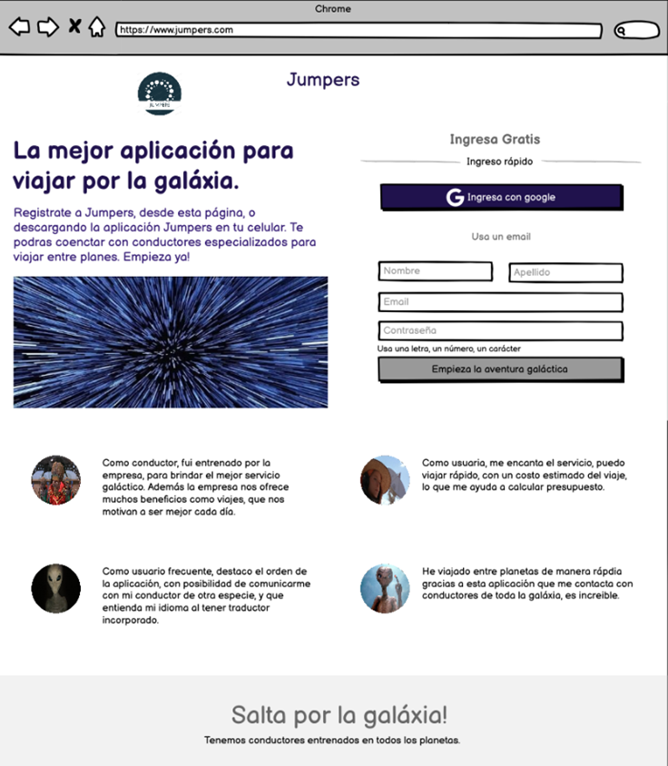

¿Te gustaría poder viajar entre planetas, sin importar que tan lejos a distancia luz se encuentre? ¿Encontraste a alguien por alguna aplicación y terminaste en una relación a distancia a millones de años luz? ¿O simplemente quieres hacer algún pedido lejano o conocer otras culturas o especies? Esto ya no será dificultad gracias a una aplicación que nos facilita el servicio de transporte intergaláctico, que conecta nuestra tecnología con desarrollo de software.
Se trata de Jumpers, una nueva aplicación de servicio de transporte galáctico, creada por la empresa Generation. Su lema es, “La galaxia al alcance de tu mano, podrás saltar a donde desees”. Está disponible como aplicación en tu celular o como página web en tu computador de ultra tecnología, e incluso en tu computador antiguo, para los usuarios que disfrutan de coleccionar artículos del pasado.
La aplicación permite solicitar viajes a otros planetas, conectando al usuario con conductores disponibles más cercanos, según la hora y fecha del viaje, además, muestra la información del viaje, según recorrido, costo y hora estimada de llegada. Son conductores registrados en la empresa, y entrenados para brindar el mejor servicio, algunos ofrecen algún detalle según el planeta al que viaje y el servicio solicitado, por ejemplo, vip, rápido, o normal.
Esta permite crear su propio perfil, usar el idioma preferido, reconocer su planeta, región de origen y de destino. Sugiere planetas más frecuentados para viajar, y ofrece promociones según un número de viajes realizados, y según tu clasificación como usuario de la aplicación.
Podrá calificar a sus conductores intergalácticos, brindar sugerencias desde la aplicación por su servicio, compartir su ubicación para mayor seguridad, y tener la certeza de que su perfil, datos ingresados y pago, es el mas seguro de la galaxia.
Entrevistamos a un usuario que lleva varios recorridos para conocer la perspectiva del cliente.
CJ7 habitante del planeta Saturno, hace viajes frecuentes a la Tierra, específicamente a Japón, y expresa: “Viajar entre planetas nunca antes fue tan fácil con la nueva tecnología, sin embargo no existía un mecanismo organizado para viajar, cada especie debía hacer búsqueda de su nave, encontré esta app y me ayuda a encontrar viajes económicos, seguros, con naves que proporciona la empresa, y con conductores de diferentes especies, super amables, esto es una maravilla!” , o como diría en su idioma “taca taca taca!”.
Por último, usted como turista o viajero frecuente, ¿usaría esta aplicación para facilitar sus viajes intergalácticos?, solo debe descargar la aplicación Jumpers y hacer la prueba, o registrarse en la página web www.jumpers.com.
Este fue su prototipo inicial de página web, el comienzo de una gran aplicación.
Daniela Lozano Vásquez.
Redactora del Galacticón y Desarrolladora Web Trainee.
Octubre 16, 2023.